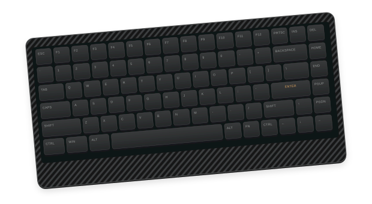

CONNECTIONUSB WIRED
Lofree Edge
Original firmware · USB connectionConnect a USB data cable and select wired mode.
Requires a desktop browser with WebHID, such as Chrome or Edge. Linux may require a device permission rule.
LOFREE EDGE / FIRMWARE & TOOLS
Install firmware over USB. Use Studio to edit keys and layers.

USB installation. Stock firmware is retained for recovery.
01 / CHOOSE
02 / CONNECT
Using ZMK? Hold Fn + Space for 3 seconds, then release to return to stock first.
03 / INSTALL
Keep USB connected until the transfer completes. Installation requires confirmation.
Loading available builds…
The browser verifies the image hash and waits for each block to be acknowledged. It stops on an error and never overwrites retained stock from ZMK.
These are trial builds. Repeated unconfirmed restarts can return the keyboard to stock automatically.
Hold Fn + Space for 3 seconds to return to stock. The physical Fn + Up startup recovery chord also remains available if mappings change.
Connect in Edge Studio → over USB, then press Fn + U to unlock. Three layers: Base, Fn, and one spare. Save writes the keymap to device storage.
Files → Import / Export transfers .keymap files. Applying a keymap does not require a firmware rebuild.
Read settings and remap keys on stock Lofree firmware. Use Studio for ZMK keymaps.
Connect a USB data cable and select wired mode.
Requires a desktop browser with WebHID, such as Chrome or Edge. Linux may require a device permission rule.
Settings are read on connection. Export the snapshot to save a local copy.
Lighting is read-only. Use the key editor below to change individual key assignments.
These bytes are a partial configuration snapshot, not a complete backup.
Select a key, assign an action, then apply the draft.
For the original Lofree firmware. Current assignments are read directly from the keyboard. The original Fn stays protected; use Edge Studio for editable layers.
Factory draft · Not applied
Connect stock firmware to read the current keymap.
Replace every key assignment with its keycap default.